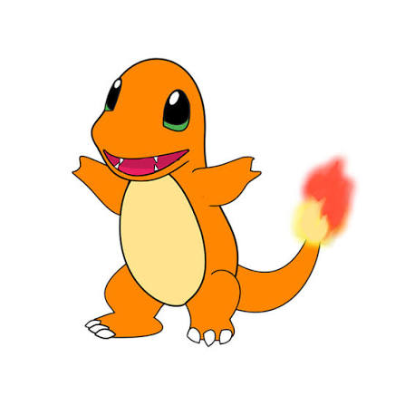
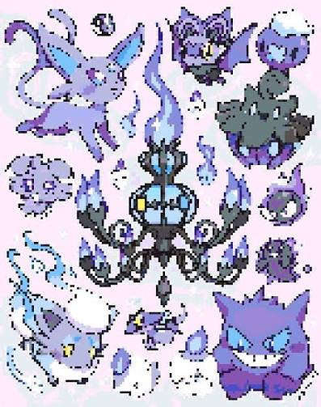
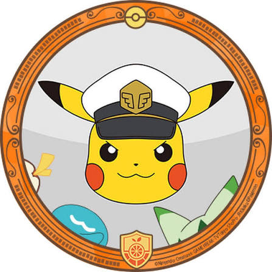
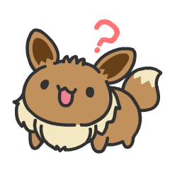

City of Boulder
Browse and sign up for volunteer opportunities, events, internships, and public programs offered by the City of Boulder.
- 7,032 volunteers
- 10,418 hours logged
- 144,907 people impacted
Volunteer Opportunities & Public Programs
Search by keyword, then narrow results with the filters below.
-

2026 Junior Ranger Program Application
Physical ability: bending, lifting up to 30 lbs, extended outdoor walking
-
2026 Rose Gardening at Dushanbe Teahouse
Physical ability: bending, squatting, dexterous use of hands and fingers
-

Trail Work Wednesdays
Physical ability: lifting, extended standing, uneven terrain
-

Weedy Wednesdays
Physical ability: bending, squatting
-

Wildflower Wednesdays Series
Physical ability: no specific physical requirements
-
No photo provided
Recorridos Guiados por el Arte Público
Physical ability: extended walking (guided tour)
Recent Impacts
Maria G.
"A lovely morning in the gardens — my third year helping."
Devon P.
"Great crew, clear instructions, and gloves provided."
June W.
"Signing up was quick and the event was well organized."
Sam R.
"Hard work but worth it — the creek path looks great."
Alex T.
"Beautiful walk and I learned a lot about native plants."
GivePulse FAQs
Answers to common questions about creating an account, registering for an opportunity, and logging your hours are in the GivePulse Support Center and the City of Boulder Volunteer Handbook.